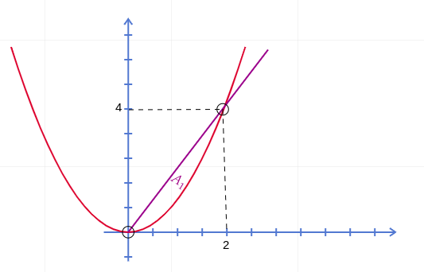

$$ \int_R \int f(x, y) \cdot dx \cdot dy \quad \text{for} \quad R = {(x, y): a \leq x \leq b, c \leq y \leq d} $$
$$ \int_c^d \int_a^b f(x, y) \cdot dx \cdot dy $$
$$ \int_a^b \int_c^d f(x, y) \cdot dy \cdot dx $$

$$ \int_0^2 \int_{y = x^2}^{y = 2x} f(x, y) \cdot dy \cdot dx $$
$$ \int_0^4 \int_{x = \frac{1}{2}y}^{x = \sqrt{y}} f(x, y) \cdot dx \cdot dy $$
$$ m = \int_R \int \rho(x, y) \cdot dA $$
$$ M_x = \int_R \int y \cdot \rho(x, y) \cdot dA $$ $$ M_y = \int_R \int x \cdot \rho(x, y) \cdot dA $$ $$ \bar{x} = \frac{M_y}{m}, \quad \bar{y} = \frac{M_x}{m} $$
$$ I_x = \int_R \int y^2 \cdot \rho(x, y) \cdot dA $$ $$ I_y = \int_R \int x^2 \cdot \rho(x, y) \cdot dA $$
$$ \int f(x) \cdot dx $$
$$ \int_R \int f(x, y) \cdot dA $$
$$ \iiint f(x, y, z) \cdot dV $$
Mass of an object (3-D)
The mass idea only works if $f(x)$, $f(x, y)$, and $f(x, y, z)$ are density functions.
$$ \int_C f(x,y) \cdot ds = \int_{t=a}^{t=b} f(x(t),y(t)) ||r'(t)|| \cdot dt $$
Here, we're integrating along a path rather than two given limits.
$$ w = \int_{t=a}^{t=b} F(\vec{r}(t)) \cdot r'(t) \cdot dt = \int_C F \cdot dr $$
(alternatively arc length parametrization as done here is also an option)
$$ \int_C xyz^2 \cdot ds $$
$C$: The segment $(1,1,0) \to (2,3,1)$.
Set up a parametric equation:
$$ x(t) = x_o + k_1t = 1 + k_1t $$
$$ y(t) = y_o + k_2t = 1 + k_2t $$ $$ z(t) = z_o + k_3t = 0 + k_3t $$
At $(2,3,1)$ and $t=1$:
$$ 2 = 1 + k_1 \Rightarrow k_1=1 $$
$$ 3 = 1 + k_2 \Rightarrow k_2 = 2 $$
$$ k_3 = 1 $$
So, we have:
$$ x(t) = 1 + t $$
$$ y(t) = 1 + 2t $$
$$ z(t) = t $$
This gives $0 \leq t \leq 1$ for this particular set of parametric equations. And:
$$ \vec{r}(t) = x\hat{i} + y\hat{j} + z\hat{k} = (1+t)\hat{i} + (1+2t)\hat{j} + t\hat{k} $$ $$ r'(t) = \hat{i} + 2\hat{j} + \hat{k} $$
$$ ||r'(t)|| = \sqrt{6} $$ $$ \int_C xyz^2 \cdot ds = \sqrt{6} \int_{t=0}^{t=1} (1+t)(2+t)t \cdot dt = \frac{89\sqrt{6}}{60} $$
$$ \int_C xy \cdot dx + (x+y) \cdot dy $$
Two segments: $C_1: (1,2) \to (3,4)$ and $C_2: (3,4) \to (4,0)$.
For $C_1$: $0 \leq t \leq 1$,
$$ x = 1 + 2t $$ $$ y = 2 + 2t $$
For $C_2$: $0 \leq t \leq 1$,
$$ x = 3 + t $$
$$ y = 4 - 4t $$
For $C_1$: $dx = 2dt$ and $dy = 2dt$,
$$ 8 \int_{t=0}^{t=1} (1+2t)(1+t) \cdot dt + (3+4t) \cdot dt = \frac{68}{3} $$
For $C_2$: $dx = dt$ and $dy = -4dt$,
$$ \int_{t=0}^{t=1} (3+t)(4-4t) \cdot dt (7-3t) \cdot -4dt = -\frac{46}{3} $$
Adding them up, we get:
$$ \frac{22}{3} $$
Determine if $F$ is conservative:
$$ \frac{\partial Q}{\partial x} = \frac{\partial P}{\partial y} = 2 \text{ (it is indeed conservative)} $$
Finding $f$ for $F = \nabla f$:
If $\nabla f = F$, then:
$$ \frac{\partial f}{\partial x} = 2y+1 $$
$$ \frac{\partial f}{\partial y} = 2x+3 $$
$$ f(x,y) = \int \frac{\partial f}{\partial x} \cdot dx = \int (2y+1) \cdot dx = 2xy + x + g(y) $$
Solving for $g(y)$:
$$ g(y) = 3y + c $$
Thus:
$$ f(x,y) = 2xy + x + 3y + c $$
Calculating the work done:
$$ \int_C F \cdot dr = f(B) - f(A) = f(-1,1) - f(0,0) = (-2 - 1 + 3 + c) - (0 + c) = 0 $$
For a non-conservative vector field, the work done is:
$$ \oint_C \left( P \, dx + Q \, dy \right) = \iint_D \left( \frac{\partial Q}{\partial x} - \frac{\partial P}{\partial y} \right) \, dA $$
Flux is given by:
$$ \oint_C \vec{F} \cdot \hat{n} \cdot ds = \iint_R (\nabla \cdot \vec{F}) \cdot dA $$
$$ \oint_C x^3 \cdot dx + xy \cdot dy $$
$C: (0,0), (1,1), (0,1)$.
$$ \frac{\partial Q}{\partial x} = y $$
$$ \frac{\partial P}{\partial y} = 0 $$
The region is defined between the lines $y=x$, $y=1$, $y=0$, and $x=0$.
$$ \int_{y=0}^{y=1} \int_{x=0}^{x=y} y^2 \cdot dx \cdot dy = \int_{y=0}^{y=1} \frac{1}{3}y^3 \cdot dy = \frac{1}{3} $$
$$ \oint_C (y^2 + \cos(x)) \cdot dx + (x-\arctan(y)) \cdot dy $$
$C: y = 4-x^2$ and $y = 0$.
$$ \frac{\partial Q}{\partial x} = 1 $$
$$ \frac{\partial P}{\partial y} = 2y $$
$$ \int_R \int 1-2y \cdot dy \cdot dx = \int_{x=-2}^{x=2} \int_{y=0}^{y=4-x^2} 1-2y \cdot dy \cdot dx $$
Result:
$$ -\frac{352}{15} $$
$$ \int_S\int f(x,y,z)\cdot dS = \int_R\int f(x,y, g(x,y)) \sqrt{g_x^2 +g_y^2+1} \cdot dA $$
$$ \int_S \int f(x, y, z) \cdot dS = \int_R \int f(x,g(x,z),z) \sqrt{g_x^2 + g_z^2+1} \cdot dA $$
$$ \int_S \int f(x, y, z) \cdot dS = \int_R \int f(g(y,z),y,z) \sqrt{g_y^2 + g_z^2+1} \cdot dA $$
$$ \int_S \int x+2y+z \cdot dS $$
For $y+z=4$ inside $x^2+y^2=1$.
Let $z=g(x,y)$, so $g(x,y)=4-y$.
Now, we get,
$$ \int_R \int x+2y+4-y \sqrt{0^2 + 1 + 1}\cdot dA=\sqrt{2}\int_R \int x+y+4\cdot dA $$
$$ \sqrt{2}\int_0^{2\pi} \int_{r=0}^{r=1} r (r\cos{\theta} + r\sin{\theta}+4) \cdot dr \cdot d\theta=4\sqrt{2}\pi $$
$$ \vec{r}(u,v)=x(u,v)\hat{i} + y(u,v)\hat{j} + z(u,v)\hat{k} $$
$$ \int_D \int ||r_u \times r_v|| \cdot dA $$
$$ \int_D \int f(r(u,v))||r_u \times r_v|| \cdot dA $$
If $\hat{\mathbf n}$ is the unit normal to $S$, and $dS$ is an infinitesimal area element on $S$, then the flux is
$$ \Phi =\iint_{S} \mathbf{F}\,\cdot\,\hat{\mathbf n}\;dS. $$
Equivalently, we often write the vector area element as
$$ d\mathbf S =\hat{\mathbf n}\,dS, $$
so that
$$ \Phi =\iint_{S}\mathbf{F}\,\cdot\,d\mathbf S. $$
If $S$ is given by a smooth parametrization
$$ \mathbf r(u,v),\quad (u,v)\in D\subset\mathbb{R}^2, $$
then the two tangent vectors are
$$ \mathbf r_u \;=\;\frac{\partial\mathbf r}{\partial u}, \qquad \mathbf r_v \;=\;\frac{\partial\mathbf r}{\partial v}. $$
The oriented area element is
$$ d\mathbf S =\bigl(\mathbf r_u\times \mathbf r_v\bigr)\,du\,dv, $$
which automatically carries both the correct direction (via the cross‐product) and the correct magnitude (area of the parallelogram).
Hence the flux becomes
$$ \Phi =\iint_{D}\mathbf{F}\bigl(\mathbf r(u,v)\bigr)\;\cdot\;\bigl(\mathbf r_u\times\mathbf r_v\bigr)\;du\,dv. $$
Compute the flux of the vector field $\mathbf{F}(x, y, z) = (x, y, z)$ through the upper hemisphere of the sphere $x^2 + y^2 + z^2 = a^2$ for $z \geq 0$, with the outward-pointing normal.
The surface $S$ is the upper hemisphere of radius $a$. Parametrize $S$ using spherical coordinates:
$$ \mathbf{r}(\theta, \phi) = (a \sin \theta \cos \phi, a \sin \theta \sin \phi, a \cos \theta), \quad \theta \in [0, \pi/2], \phi \in [0, 2\pi]. $$
Here, $\theta$ is the polar angle (from the positive $z$-axis), and $\phi$ is the azimuthal angle. The domain $D$ is $[0, \pi/2] \times [0, 2\pi]$.
Compute the partial derivatives of $\mathbf{r}$. We have $u=\theta$, $v=\theta$:
$$ \mathbf{r}_u = \frac{\partial \mathbf{r}}{\partial u} = (a \cos u \cos v, a \cos u \sin v, -a \sin u), $$
$$ \mathbf{r}_v = \frac{\partial \mathbf{r}}{\partial v} = (-a \sin u \sin v, a \sin u \cos v, 0). $$
The oriented area element is given by $\textbf{r}_u \times \textbf{r}_v$. Compute the cross product:
$$ \begin{vmatrix} \mathbf{i} & \mathbf{j} & \mathbf{k} \\ a \cos u \cos v & a \cos u \sin v & -a \sin u \\ -a \sin u \sin v & a \sin u \cos v & 0 \end{vmatrix}. $$
Expanding the determinant:
$$(a \cos u \sin v \cdot 0) - (-a \sin u \cdot a \sin u \cos v) = a^2 \sin^2 u \cos v$$
$$-\left[ (a \cos u \cos v \cdot 0) - (-a \sin u \cdot (-a \sin u \sin v)) \right] = a^2 \sin^2 u \sin v$$
$$(a \cos u \cos v \cdot a \sin u \cos v) - (a \cos u \sin v \cdot (-a \sin u \sin v)) = a^2 \cos u \sin u$$
Thus, setting $\textbf{r}_\text{cross} = \textbf{r}_u \times \textbf{r}_v$
$$\textbf{r}_\text{cross}=(a^2 \sin^2{u} \cos v, a^2\sin^2 u \sin v, a^2 \sin u \cos u). $$
This vector points outward, as required.
Evaluate the vector field $\textbf{F}$ on the surface:
$$ \textbf{F}(\mathbf{r}(u, v)) = (a \sin u \cos v, a \sin u \sin v, a \cos u). $$
Compute the dot product:
$$ \textbf{F} \cdot \textbf{r}_\text{cross} = (a \sin u \cos v)(a^2 \sin^2 u \cos v) + (a \sin u \sin v)(a^2 \sin^2 u \sin v) + (a \cos u)(a^2 \sin u \cos u). $$
Simplify:
$$ = a^3 \sin^3 u \cos^2 v + a^3 \sin^3 u \sin^2 v + a^3 \sin u \cos^2 u = a^3 \sin^3 u (\cos^2 v + \sin^2 v) + a^3 \sin u \cos^2 u $$
$$ = a^3 \sin^3 u (1) + a^3 \sin u \cos^2 u = a^3 \sin u (\sin^2 u + \cos^2 u) = a^3 \sin u (1) = a^3 \sin u. $$
The flux is the double integral over $D$ using
$$ v =\iint_{D}\mathbf{F}\bigl(\mathbf r(u,v)\bigr)\;\cdot\;\bigl(\mathbf r_u\times\mathbf r_v\bigr)\;du\,dv. $$
$$ = \int_{v=0}^{2\pi} \int_{u=0}^{\pi/2} a^3 \sin u du dv. $$
First, integrate with respect to $u$:
$$ \int_0^{\pi/2} a^3 \sin u du = a^3 \left[ -\cos u \right]_0^{\pi/2} = a^3 \left( -\cos(\pi/2) + \cos(0) \right) = a^3 (0 + 1) = a^3. $$
Next, integrate with respect to $v$:
$$ \int_0^{2\pi} a^3 dv = a^3 \left[ v \right]_0^{2\pi} = a^3 (2\pi) = 2\pi a^3. $$
Thus,
$$ v = 2\pi a^3. $$
The flux of $\mathbf{F}$ through the upper hemisphere is $\boxed{2\pi a^3}$.
If $S$ is the graph of $z=g(x,y)$ over a domain $R$ in the $xy$‐plane, then we can parametrize by
$$ \mathbf r(x,y) = \bigl(x,\,y,\,g(x,y)\bigr),\quad (x,y)\in R. $$ Compute
$$ \mathbf r_x = (1,\,0,\,g_x), \qquad \mathbf r_y = (0,\,1,\,g_y), $$ so
$$ \mathbf r_x\times\mathbf r_y =\bigl(-g_x,\,-g_y,\,1\bigr). $$ Thus
$$ d\mathbf S =\bigl(-g_x,\,-g_y,\,1\bigr)\,dA, $$
and the flux is
$$ \Phi =\iint_{R} \mathbf{F}\bigl(x,y,g(x,y)\bigr)\;\cdot\;\bigl(-g_x,\,-g_y,\,1\bigr)\;dA. $$
If the flowing medium has mass density $\rho(x,y,z)$, then the mass flux across $S$ is
$$ \iint_{S}\rho\,\mathbf{F}\,\cdot\,d\mathbf S. $$
$$ \text{Flux}=\int_S\int \textbf{F} \cdot dS = \int_T\int\int \text{Div}(F) \cdot dV $$
Find the flux through the vector field
$$ F(x,y,z)=(x+\sin{z})\hat{i} + (2y+\cos{x})\hat{j} + (3z+\tan{y})\hat{k} $$
over the surface $x^2+y^2+z^2=4$.
$$ \text{Div}(F) = 6 $$
$$ \int_S\int \textbf{F} \cdot dS = \int_T \int \int 6 \cdot dV $$
We can integrate it in spherical coordinates. So, $0 \leq \rho \leq 2$, $0 \leq \phi \leq \pi$, $0\leq \theta \leq 2\pi$,
$$ \int_{0}^{2\pi} \int_0^\pi \int_0^2 6\rho^2 \sin{\phi} \cdot d\rho d\phi d\theta = 64\pi $$
$$ w = \oint_C \textbf{F} \cdot dr = \int_S \int \text{Curl}(\textbf{F}) \cdot dS $$
$S$ is not a plane, it's a surface.